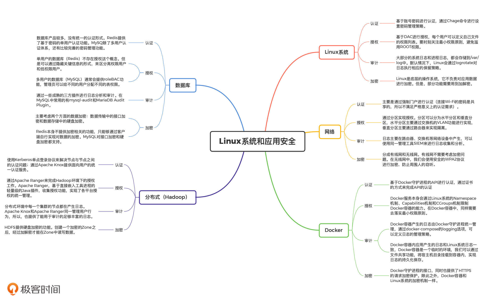

- 00 开篇词 别说你没被安全困扰过.md.html
- 01 安全的本质：数据被窃取后，你能意识到问题来源吗？.md.html
- 02 安全原则：我们应该如何上手解决安全问题？.md.html
- 03 密码学基础：如何让你的密码变得“不可见”？.md.html
- 04 身份认证：除了账号密码，我们还能怎么做身份认证？.md.html
- 05 访问控制：如何选取一个合适的数据保护方案？.md.html
- 06 XSS：当你“被发送”了一条微博时，到底发生了什么？.md.html
- 07 SQL注入：明明设置了强密码，为什么还会被别人登录？.md.html
- 08 CSRF_SSRF：为什么避免了XSS，还是“被发送”了一条微博？.md.html
- 09 反序列化漏洞：使用了编译型语言，为什么还是会被注入？.md.html
- 10 信息泄露：为什么黑客会知道你的代码逻辑？.md.html
- 11 插件漏洞：我的代码看起来很安全，为什么还会出现漏洞？.md.html
- 13 Linux系统安全：多人共用服务器，如何防止别人干“坏事”？.md.html
- 14 网络安全：和别人共用Wi-Fi时，你的信息会被窃取吗？.md.html
- 15 Docker安全：在虚拟的环境中，就不用考虑安全了吗？.md.html
- 16 数据库安全：数据库中的数据是如何被黑客拖取的？.md.html
- 17 分布式安全：上百个分布式节点，不会出现“内奸”吗？.md.html
- 18 安全标准和框架：怎样依“葫芦”画出好“瓢”？.md.html
- 19 防火墙：如何和黑客“划清界限”？.md.html
- 20 WAF：如何为漏洞百出的Web应用保驾护航？.md.html
- 21 IDS：当黑客绕过了防火墙，你该如何发现？.md.html
- 22 RASP：写规则写得烦了？尝试一下更底层的IDS.md.html
- 23 SIEM：一个人管理好几个安全工具，如何高效运营？.md.html
- 24 SDL：怎样才能写出更“安全”的代码？.md.html
- 25 业务安全体系：对比基础安全，业务安全有哪些不同？.md.html
- 26 产品安全方案：如何降低业务对黑灰产的诱惑？.md.html
- 27 风控系统：如何从海量业务数据中，挖掘黑灰产？.md.html
- 28 机器学习：如何教会机器识别黑灰产？.md.html
- 29 设备指纹：面对各种虚拟设备，如何进行对抗？.md.html
- 30 安全运营：“黑灰产”打了又来，如何正确处置？.md.html
- 加餐1 数据安全：如何防止内部员工泄露商业机密？.md.html
- 加餐2 前端安全：如何打造一个可信的前端环境？.md.html
- 加餐3 职业发展：应聘安全工程师，我需要注意什么？.md.html
- 加餐4 个人成长：学习安全，哪些资源我必须要知道？.md.html
- 加餐5 安全新技术：IoT、IPv6、区块链中的安全新问题.md.html
- 模块串讲（一）Web安全：如何评估用户数据和资产数据面临的威胁？.md.html
- 模块串讲（三）安全防御工具：如何选择和规划公司的安全防御体系？.md.html
- 模块串讲（二）Linux系统和应用安全：如何大范围提高平台安全性？.md.html
- 结束语 在与黑客的战役中，我们都是盟友！.md.html
- 捐赠
模块串讲（二）Linux系统和应用安全：如何大范围提高平台安全性？
你好，我是何为舟。“Linux系统和应用安全”模块讲完了，今天我通过一篇串讲，带你复习巩固一下这一模块的内容。
在这一模块中，我们重点讲解了，在开发过程中经常要接触或使用的平台、工具的安全功能。这些平台和工具包括：Linux系统、网络、容器、数据库和分布式平台。
那通过对这些平台和工具的安全功能分析，相信你已经知道了，应该如何正确配置和使用这些工具，来避免底层应用出现安全隐患，以防影响整个应用的安全性。
公司中有很多研发和运维人员，他们都在使用和维护自己的系统和应用，那要怎么保证他们都能够去采用最安全的配置呢？
重点知识回顾
在解决这个问题之前，我们先来回顾一下，Linux系统、网络、容器、数据库和分布式平台这些平台、工具的安全功能有哪些。
专栏一开始，我说过：安全的本质是数据的CIA，而保护数据CIA的办法就是黄金法则和密码学。因此，在讲解各个平台和工具的安全功能时，我都是以黄金法则和密码学为线索来探讨的。
所以，今天我还是以黄金法则和密码学为线索，带你系统梳理一下本模块的重点内容。希望通过今天的讲解，你能在此基础上总结出自己的学习经验和知识框架。
在之前的课程中，我都详细讲过这些安全功能了，你可以根据我梳理的知识脑图进一步复习巩固。在这里，我就挑一些重点内容着重强调一下。

1.认证
认证的目的在于明确用户的身份标识。在各个平台和工具中，基本都会提供各类形式的认证功能，包括：账号密码、公私钥、证书和单点登录等形式。对于认证来说，最大的问题在于弱密码导致的登录凭证丢失。对于这个问题的防护，主要的解决办法是强化密码管理策略，比如：限制最低密码强度、定期修改密码。
2.授权
授权的目的在于限定用户的行为，但是授权的形式多种多样，在不同平台中都有不同的体现形式。授权最核心的原则就是最小权限原则，所以对于任何平台来说，落实最小权限原则，都是在加强授权安全性中最直接、有效的一步。
3.审计
审计的基础是日志。对于各个平台的审计功能，我们主要需要关注它们会产生哪些日志，以及日志的信息是否充足。
这里，我要强调一下Docker容器的审计。Docker日志可以分为Docker容器产生的日志和Docker容器内应用产生的日志。
Docker容器日志由Docker守护进程统一管理，通过docker-compose的logging选项，我们可以定义日志的管理策略。
Docker容器内应用的日志和Linux系统日志一致，但是Docker容器是一个临时的环境，无法持久保存日志。因此，我们可以通过文件共享功能，将宿主机目录挂载到容器内，从而实现日志的持久化保存。
4.加密
事实上，黄金法则只能起到保护的作用，也就是保证用户在正常使用应用的时候，不会破坏数据的CIA。但是，很多时候，黑客也会通过非正常的方式去窃取和篡改数据（比如窃听网络流量、物理盗取硬盘等）。这个时候，我们就需要依靠密码学来对数据进行保护了，确保只在正确使用应用的情况下，才能解密数据。
那我们来看一下Linux系统中的加解密。Linux是底层的操作系统，它不负责对应用数据进行加密。但是，Linux系统本身仍然需要提供一些应用层的功能（比如最基础的登录），而这些功能往往需要用到加解密。比如，在/etc/shadow中，密码的存储形式如下所示：
root:$6$d9k5nMkuTqDf7dET$C8qwu4q2a96BItyIMhI8oNVpEzztvG/8P6BdEjmAZJS5s4Ad66MI9HxKDtImz7m.QSvVZgk7BhCLM5pFnro1U0::0:99999:7:::
对这行数据按冒号进行分隔，第二部分就是密码部分。密码部分按$进行分隔，第一个“6”是散列算法，第二个“d9k5nMkuTqDf7dET”是盐，第三个是最终的散列值。所以，在Linux中，用户登录进行密码匹配的过程，其实就是判定密码加盐后的散列值是否一致的过程。
如何大范围提高平台安全性？
回顾完这些重点内容之后，我们来看文章开头提到的问题：怎么保证公司内的研发和运维人员都能够去采用最安全的配置，也就是如何大范围提高平台的安全性。
首先，最简单、直接的一个方案就是安全培训。但是，如果你做过培训或者参加过培训，一定能够感受到，强制性培训的效果其实很不理想。因此，我们必须要采用有效的技术手段，提升研发和运维人员的安全意识。基于这个目的，行业内提出了“安全基线”的概念。
所谓“安全基线”，就是由安全人员制定的一系列安全规范，这些规范可以通过技术手段进行检测。比如，在Linux的密码管理中，我们可以将密码管理规范定义为：一个用户60天内必须修改密码，并且必须开启强制修改密码配置。
如果我们想要检测这个规范也很容易。我们可以通过下面的脚本，来检查一下/etc/shadow中ROOT用户的最后修改密码时间。
last=$(grep root /etc/shadow | awk -F ":" '{print $3}')
date -u -d "1970-01-01 $last days" "+%Y-%m-%d"
然后，我们只需要将这个脚本，放到所有的Linux系统中执行一遍，就能够知道在公司环境中，有多少root用户已经长期没有修改密码了。对于这些不符合要求、存在安全风险的Linux系统。发现之后，我们只需要点对点的要求对应系统的管理员去完善就可以了。
一个好的安全基线，需要事无巨细地覆盖到黄金法则的方方面面，所以需要专业的安全人员来制定。不过，很多公司的安全基线是可以共用的，因此，有一些安全公司把常见的系统和应用的安全基线进行了总结，比如知名的CIS Benchmarks。有了CIS的标准安全基线，我们就可以实现通用的基线检查工具了，比如Docker中比较知名的Docker Bench for Security，就是基于CIS的Docker安全基线开发出来的。
那有了安全基线的检测，是不是就“万事大吉”了呢？其实不是。在我们实际检测的过程中，很容易出现系统不符合安全基线，我们也告知了开发人员存在的风险，但开发人员不买账的情况。
比如说，CIS中关于Centos的基线要求/tmp目录必须挂载在单独的分区，并且设置/tmp中的文件全部不可执行。这当然是合理的，因为黑客通常会将木马、后门等文件下载到/tmp目录中再执行。但是，想要完成这个操作，你必须下载一个工具LVM来进行配置。而安全基线只是一个预防针，它并不会产生实际的收益。所以，你没有足够的理由去强制要求开发人员，花费这个精力来满足你想要实施的安全基线。这个时候，我们应该怎么办呢？
目前，最优的解决方案就是在一开始，我们就分配给开发人员一个符合安全基线的系统。这样一来，只要开发人员不去修改配置，就不会违背安全基线了。要实现这个功能，我们首先需要自己配置出一个符合安全基线的系统，然后将这个系统打包成镜像，应用到后续的系统安装过程中，按照我们刚才说的CIS Benchmarks配置就可以了。
简单总结一下，通过定义安全基线、配置安全镜像，我们就能够提供整个公司的系统和平台工具安全性。在这之后，我们只要配合基线检查工具进行定期的检测，并提醒开发、运维人员不要去修改安全配置，就能够将安全性保持在一个较高的水平了。
总结
好了，通过对Linux系统、网络、容器、数据库和分布式平台的安全功能分析，我们发现，黄金法则和加密始终贯穿于安全防护体系之中。每一个工具，甚至每一个单独的功能，都可以根据黄金法则去思考需要提供的安全能力和基本的加解密功能，来防止黑客非正常手段的攻击。
除此之外，公司是一个整体，只有你个人系统和工具的安全性提升了，并不会有太大效果。因此，我们需要利用安全基线，来提升公司整体的安全水平避免出现短板。
思考题
通过今天的串讲梳理，相信你已经对Linux系统和应用的安全有一个全面的认知了。
你可以思考一下，你接触过的其他平台或者工具，它们在黄金法则和加解密上，又分别提供了哪些功能呢？
欢迎留言和我分享你的思考和疑惑，也欢迎你把文章分享给你的朋友。我们下一讲再见！
© 2019 - 2023 Liangliang Lee. Powered by gin and hexo-theme-book.